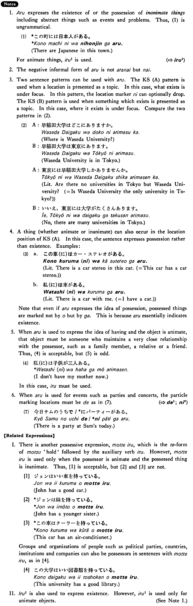

ある (1) (B. 73)
- (ksa).
- この町（に）は大学が三つある・あります。
- In this town are three universities.
- (ksb).
- エッフェル塔はパリにある・あります。
- The Eiffel Tower is in Paris.
- (a).
- 私のアパト(に)はテレビが二台ある。
- There are two TV sets in my apartment.
- (b).
- デトロイトはミシガン州にあります。
- Detroit is in the State of Michigan.
- (c).
- 和田さんのうち(に)はクーラーがない。
- There is no air-conditioner at Mr. Wada's.
